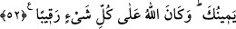

ALLAH,
KALBLERİNİZDE OLANI
BİLİR
49. Ey îman edenler! Mü’min kadınları nikâhlayıp da, henüz zifâfa girmeden
onları boşarsanız, onları sayacağınız bir iddet süresince bekletme hakkınız yoktur.
O halde onları (bir bağışla) memnun edin ve onları güzel bir şekilde serbest
bırakın.
50. Ey Peygamber! Mehirlerini verdiğin hanımlarını, Allâh’ın sana ganîmet olarak
verdiği ve elinin altında bulunan cariyeleri, amcanın, halanın, dayının ve teyzenin
seninle beraber göç eden kızlarını sana helâl kıldık. Bir de Peygamber kendisiyle
evlenmek istediği takdirde, kendisini peygambere hîbe eden mü’min kadını, diğer
mü’minlere değil, sırf sana mahsus olmak üzere (helâl kıldık). Şüphesiz biz,
hanımları ve ellerinin altında bulunan cariyeleri hakkında mü’minlere neyi farz
kıldığımızı biliriz. (Bu hususta ne yapmaları lâzım geldiğini onlara açıkladık) ki,